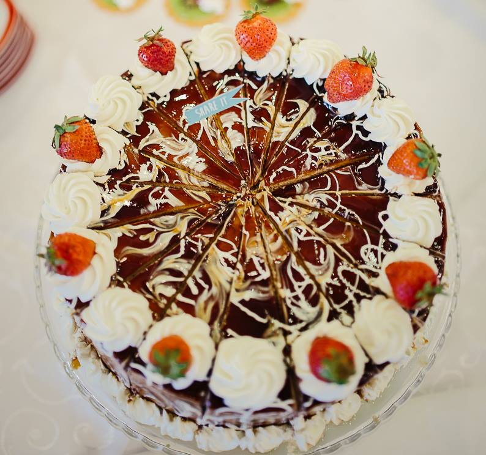

Dulciuri făcute cu pasiune, la Zalău.
Cofetăria Aralia pregătește torturi aniversare cu aspect impresionant și prăjituri fine, cu îndemânare și ingrediente atent alese — o cofetărie de familie din inima orașului.

Un reper al dulciurilor bune în Zalău.
Cu o experiență de peste 20 de ani în pregătit dulciuri cu pasiune și multă dedicare, Cofetăria Aralia a devenit un reper al excelenței în domeniul produselor de cofetărie din oraș.
Propunem o ofertă diversificată, menită să încânte în orice ocazie: de la torturi aniversare cu aspect impresionant până la prăjituri fine, toate realizate cu îndemânare și cu ingrediente atent alese, pentru un gust de calitate.
Fie că este vorba despre un eveniment important sau despre un moment obișnuit de zi cu zi, ne implicăm în fiecare comandă cu aceeași grijă — și mereu cu produse proaspete.
Dulce, pentru fiecare ocazie
De la torturi pentru zile mari până la prăjiturile de fiecare zi — pregătite proaspăt, cu ingrediente atent alese.
Torturi aniversare
Torturi cu aspect impresionant pentru zile de naștere, botezuri și aniversări — gândite după ocazie și gustul tău.
Prăjituri fine
O selecție de prăjituri de cofetărie, realizate cu îndemânare din ingrediente de calitate — perfecte lângă o cafea.
Comenzi personalizate
Ai o idee anume? Abordare personalizată și soluții adaptate cerințelor tale, cu atenție la fiecare detaliu al comenzii.
Torturi care arată la fel de bine pe cât sunt de bune.
Fiecare tort pleacă din laborator gândit până la ultimul detaliu — glazură lucioasă, frișcă bătută proaspăt și fructe de sezon, aranjate cu răbdare.
Ne place să lucrăm după ocazie și după gustul tău, așa că spune-ne ce sărbătorești și ne ocupăm noi de rest.
- Torturi la comandă pentru orice eveniment
- Ingrediente atent alese, gust de calitate
- Produse mereu proaspete, făcute cu pasiune
Laureat, an de an
Cofetăria Aralia este premiată în clasamentul „Șoimii Cofetari” pentru constanța în calitate.
Distincție de aur în „Șoimii Cofetari”
Laureat cu medalie de aur în clasamentul „Șoimii Cofetari”, cu un scor de 9,3 din 10 din partea a peste 100 de clienți — o recunoaștere a constanței în calitate și a atenției pentru fiecare comandă.
Ne găsești pe Str. Simion Bărnuțiu
Comenzi & informații
0740 248 864
Sună-ne pentru comenzi și program.